Analysis of Factors Affecting Well-Being
Introduction
In this project I analyze which factors are related to well-being, stress, and productivity using several datasets. Each dataset represents a different group of people, so I decided to analyze them separately and then compare the results.
The main idea of this work is to see which variables appear most often in connection with human condition. In particular, I focus on sleep, stress, physical activity, productivity, and related lifestyle factors.
This analysis is based on correlation and PCA. Correlation helps to see which variables are directly related to the selected target, while PCA helps to understand the overall structure of the data and identify the main patterns.
Datasets
The following cleaned datasets were used in this project:
clean_pca.csv— general lifestyle data, target:wellnessclean_productivity.csv— productivity and daily habits, target:productivityclean_sleep.csv— sleep and health data, target:stress_levelclean_students.csv— student lifestyle data, target:stress_numericclean_remote.csv— remote work data, target:productivity_score
These datasets were not merged because they come from different sources and describe different groups of people.
Methods
Correlation analysis
For each dataset I calculated correlations between numeric features and the selected target variable. This helps to see which variables have the strongest positive or negative relationship with the target.
Principal Component Analysis (PCA)
PCA was used to reduce dimensionality and to identify the main directions of variation in the data. For each dataset I looked at:
- explained variance
- loadings of the first principal component
- scatter plot of PC1 and PC2
This makes it easier to understand which variables form the main structure of the dataset.
Dataset: Lifestyle
Target variable: wellness
Correlation with wellness
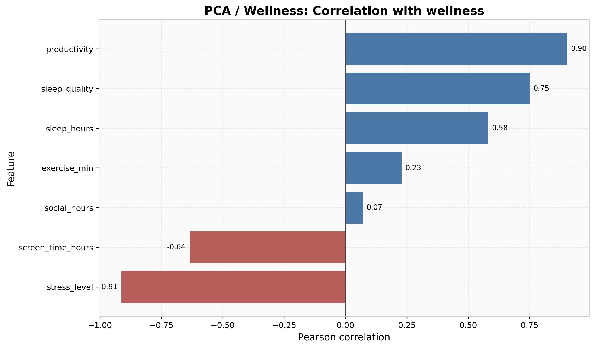
This plot shows how each variable is related to the wellness score.
Positive values mean that the variable tends to increase together with wellness. Negative values mean the opposite.
For example, if sleep-related variables have a positive correlation, this means that better sleep is associated with better well-being. If stress has a negative correlation, then higher stress is associated with worse condition.
This plot is useful because it gives a direct first look at the strongest relationships in the data.
PCA variance
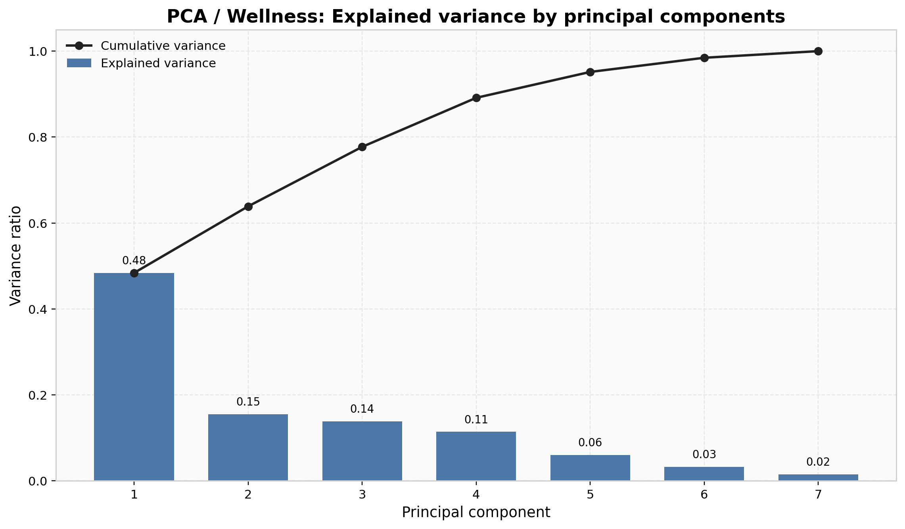
This plot shows how much variance is explained by each principal component.
The first component, PC1, explains the largest part of the variation. The next components explain less and less.
If the first few components explain a large percentage of total variance, it means that the structure of the data can be described with fewer dimensions.
PC1 loadings
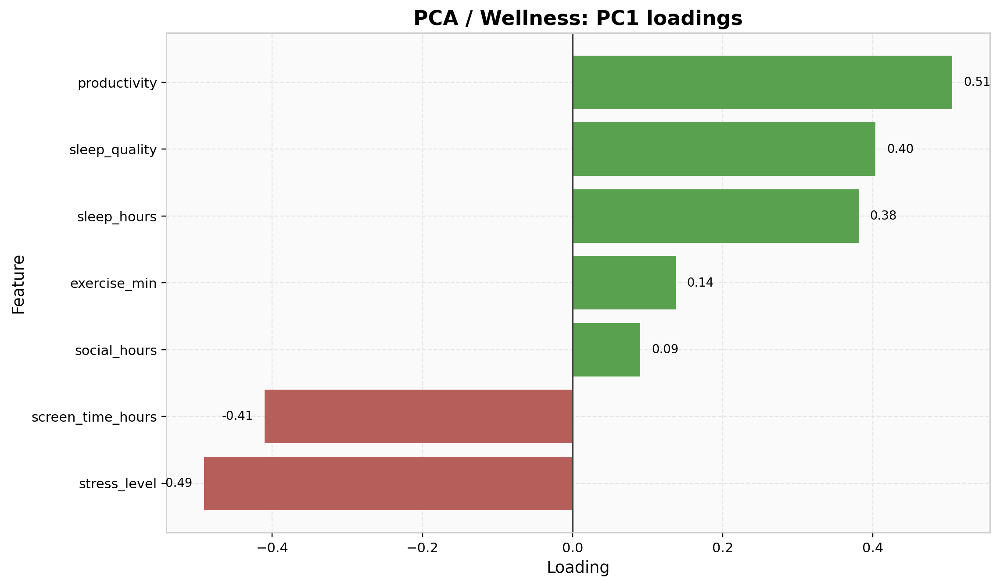
This plot shows which variables contribute the most to the first principal component.
A larger absolute value means that the variable plays a stronger role in defining the main pattern of the dataset. The sign shows the direction of that contribution.
This is important because PC1 represents the strongest common pattern in the data. If stress, sleep, and activity all have large loadings, then the main variation in the dataset is likely connected to those variables.
PC1 vs PC2
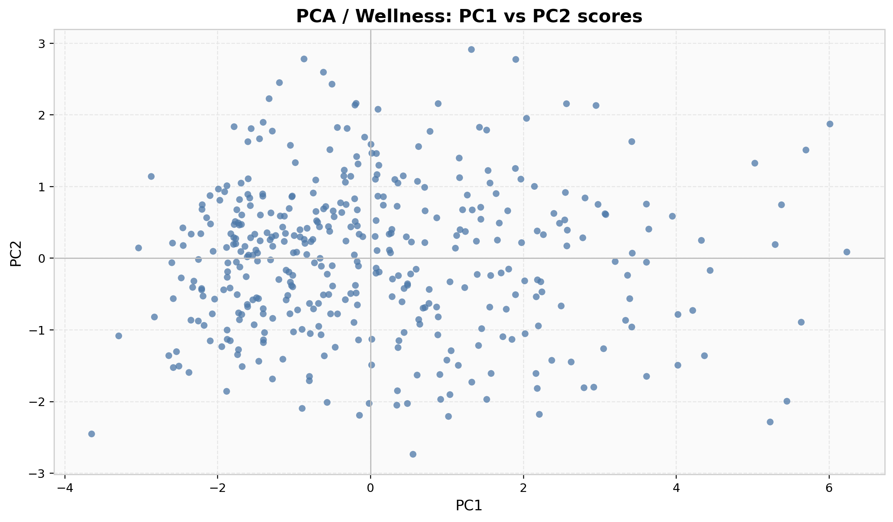
This plot shows the observations in a reduced two-dimensional PCA space.
Each point is one row from the dataset. PC1 and PC2 are new axes created by PCA. Together they show the main structure of the data in a simpler form.
If there are visible clusters or some directional shape, this may suggest that the dataset contains patterns or internal grouping.
Dataset: Productivity
Target variable: productivity
Correlation with productivity
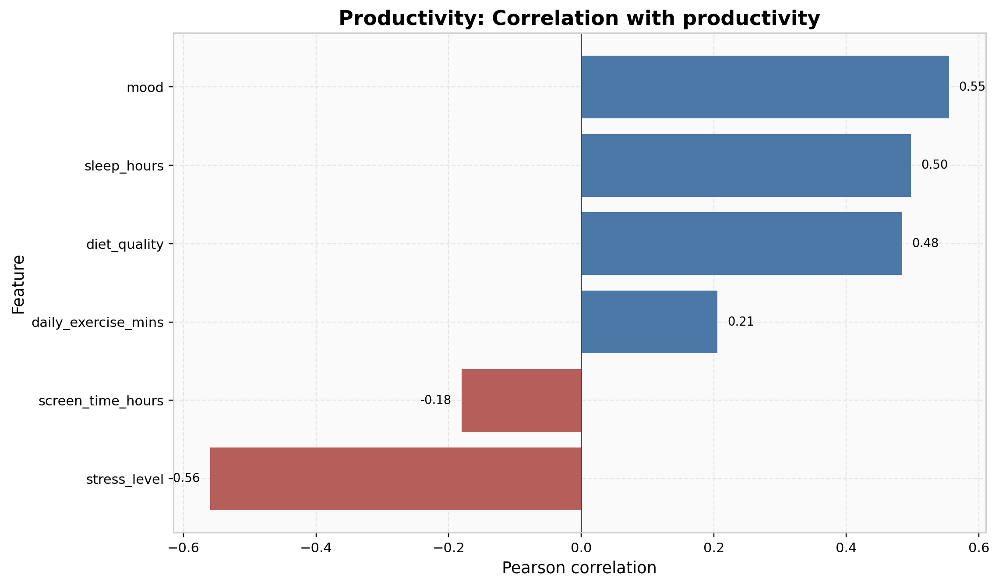
This plot shows how each variable is related to productivity.
Variables with positive correlation tend to increase together with productivity. Variables with negative correlation move in the opposite direction.
This helps to identify which habits or conditions are linked to better performance.
PCA variance
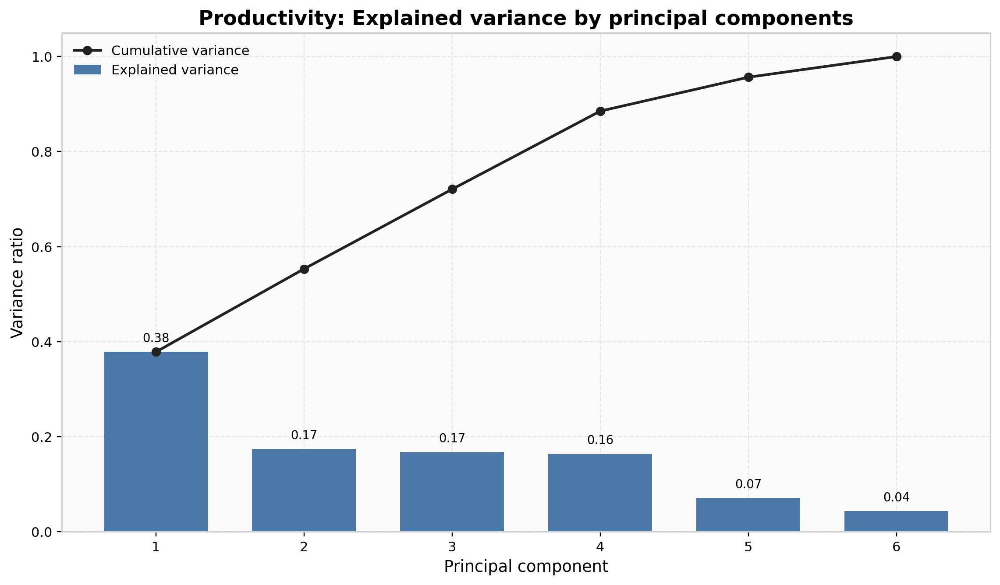
This plot shows how much of the total variation is explained by each component.
If PC1 and PC2 explain a large part of the variance, then most of the structure of the dataset can be described by just a few components.
PC1 loadings
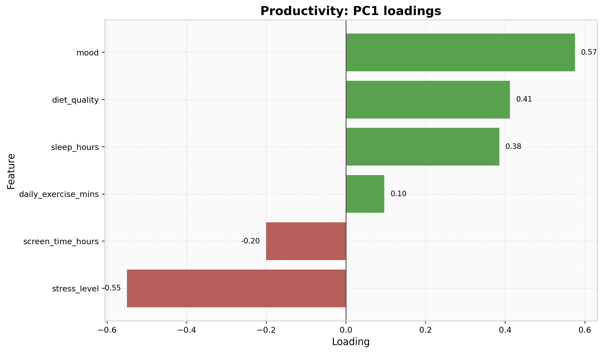
This plot shows which variables define the first principal component in the productivity dataset.
It helps to understand which features form the main productivity-related pattern in the data.
For example, if mood, sleep, and exercise have strong loadings, then productivity is likely connected to a broader lifestyle pattern rather than a single variable.
PC1 vs PC2
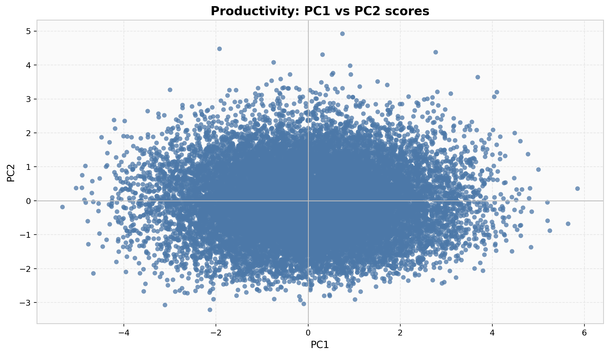
This scatter plot shows the data after projection into the first two principal components.
It gives a simplified view of the dataset and can reveal whether the observations follow some visible structure.
Dataset: Sleep
Target variable: stress_level
Correlation with stress level
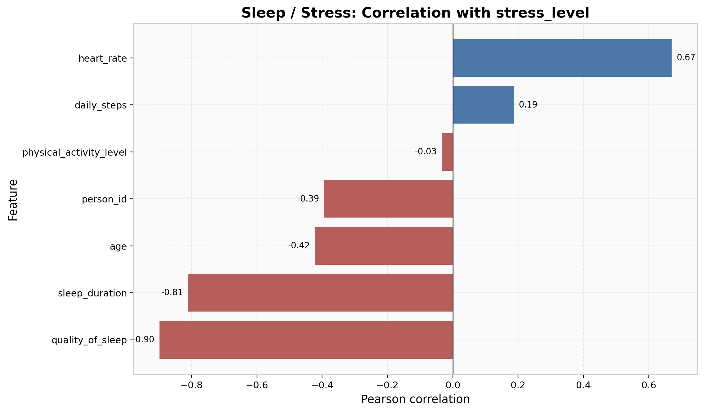
This plot shows which variables are most related to stress level in the sleep dataset.
Positive correlation means the variable tends to increase with stress. Negative correlation means the variable tends to decrease when stress increases.
This is useful for identifying factors that may be associated with stress in the context of sleep and health.
PCA variance
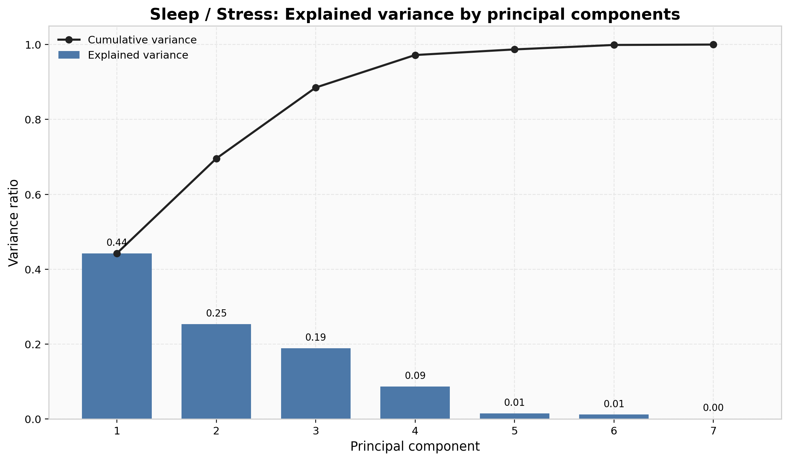
This plot shows how much of the variation in the dataset is captured by each principal component.
Usually the first few components contain the most important structure.
PC1 loadings
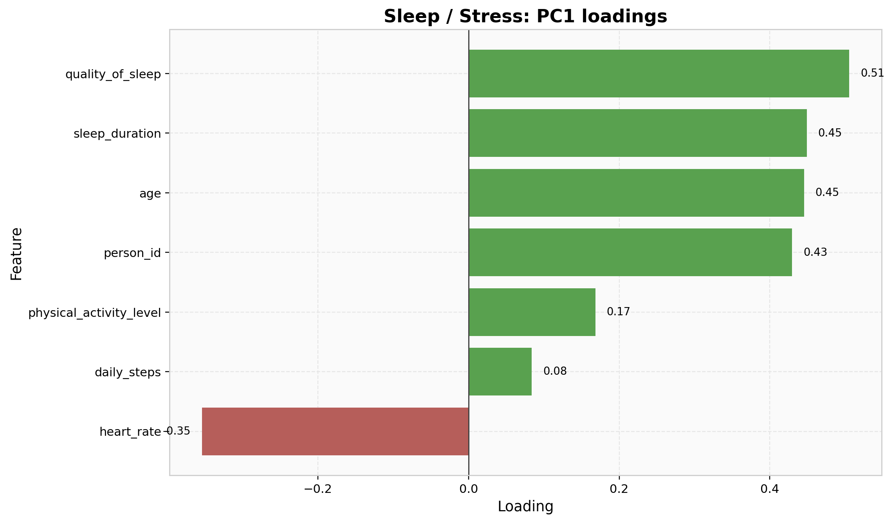
This plot shows which variables contribute the most to PC1.
This is one of the most important PCA plots because it tells us what the main pattern in the sleep dataset looks like.
For example, if sleep duration, physical activity, and stress all have strong loadings, then PC1 may reflect a general health-related pattern.
PC1 vs PC2
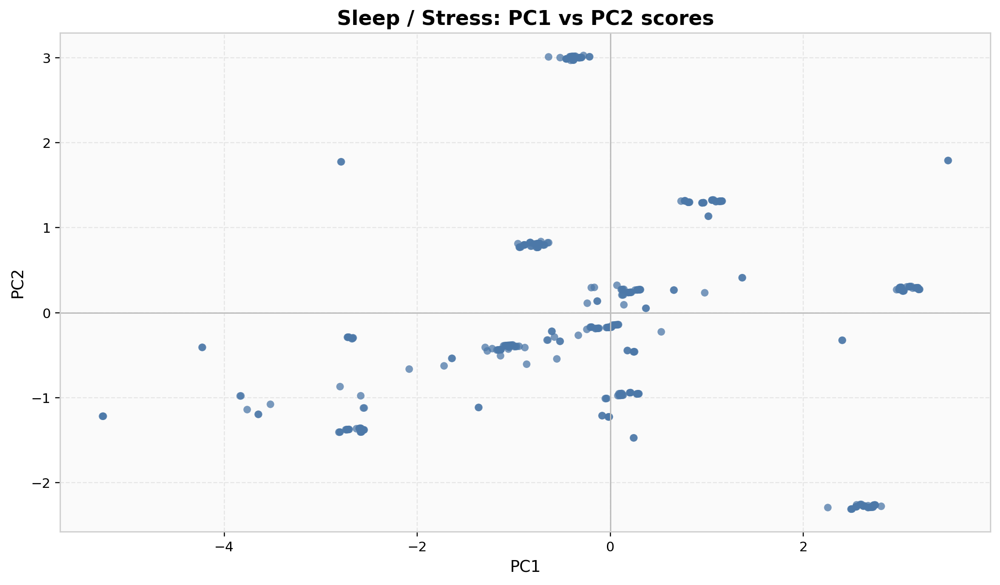
This plot shows the distribution of observations in PCA space.
It gives a compact visual representation of the data and helps to see whether there are patterns that are not obvious in the original variables.
Dataset: Students
Target variable: stress_numeric
Correlation with stress
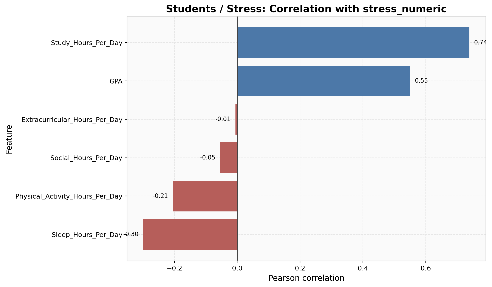
This plot shows how the main student lifestyle variables are related to stress.
This can help identify whether study hours, sleep, social time, or physical activity are associated with a higher or lower stress level.
PCA variance
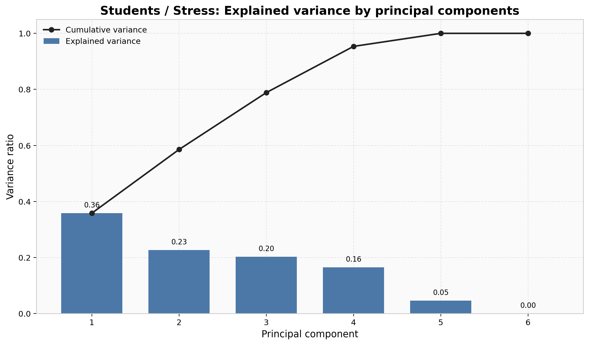
This plot shows the variance explained by each principal component in the student dataset.
If the first components explain most of the variation, then the main structure of student lifestyle can be summarized with only a few dimensions.
PC1 loadings
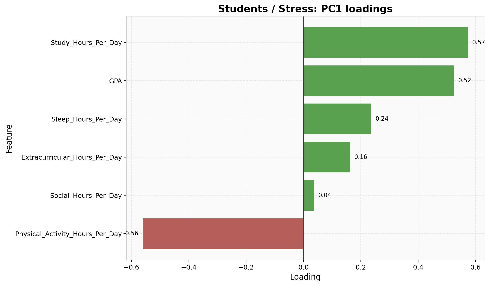
This plot shows which student-related variables define the first principal component.
This helps to identify the dominant lifestyle pattern in the student dataset.
PC1 vs PC2
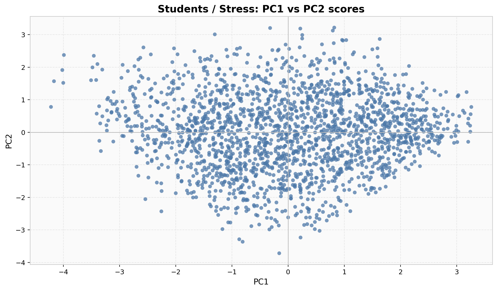
This plot shows student observations in reduced PCA space.
It is useful for seeing whether the data forms any visible structure or grouping.
Dataset: Remote Work
Target variable: productivity_score
Correlation with productivity
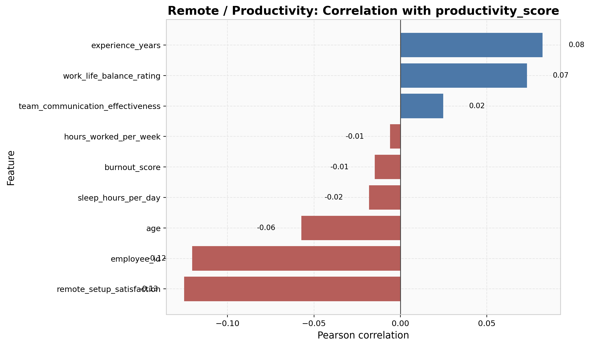
This plot shows how different remote work variables are related to productivity.
It helps to identify whether work-life balance, sleep, communication, or work hours are associated with better performance.
PCA variance
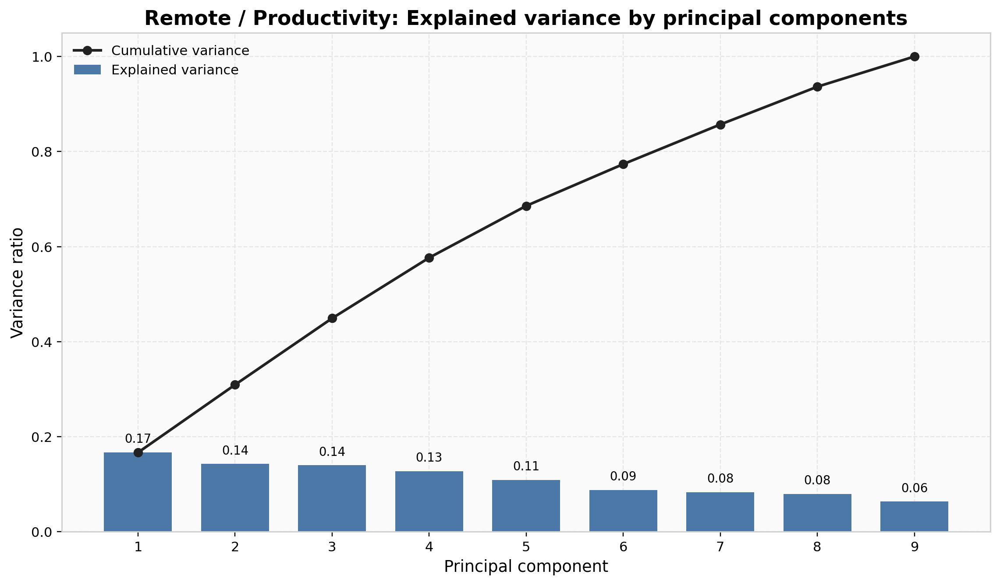
This plot shows how much variance is explained by each principal component in the remote work dataset.
As in the other datasets, the first components usually contain the strongest structure.
PC1 loadings
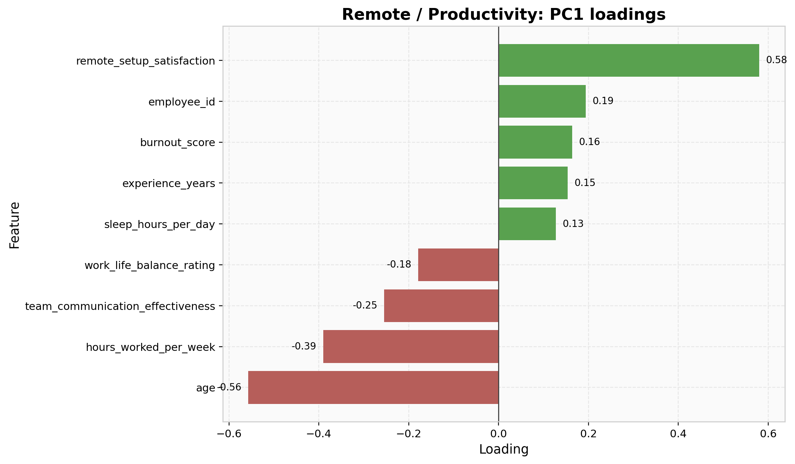
This plot shows which variables contribute most strongly to the first principal component.
This can help interpret the main pattern in remote work data, for example whether it is more related to workload, balance, or satisfaction.
PC1 vs PC2
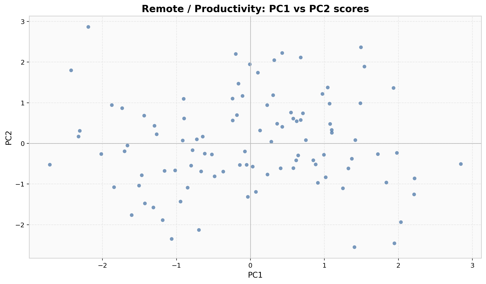
This plot shows how the observations are distributed in the first two principal components.
It gives a simplified picture of the dataset and can reveal whether there is any visible internal structure.
General observations
After comparing the datasets, several variables appear repeatedly as important:
- stress
- sleep
- physical activity
- productivity-related measures
These variables often show strong correlations with the target and also appear as important contributors in PC1.
This suggests that the main patterns in different datasets are not random. Instead, they are often built around a small group of recurring lifestyle and mental-state factors.
Conclusion
The results of this project show that well-being, stress, and productivity are strongly related to a few common variables.
The most important ones across the datasets are:
- stress level
- sleep quality or sleep duration
- physical activity
- productivity or work-related balance
Correlation analysis showed which variables are directly associated with the targets. PCA made it possible to see the broader structure of the data and understand which variables form the main patterns.
This analysis does not prove cause and effect, but it gives a clear picture of the strongest relationships in the available data.